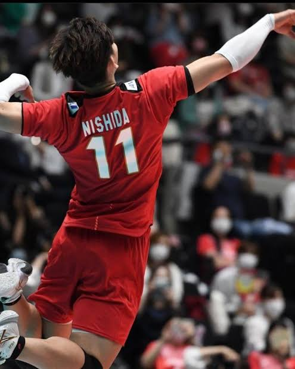
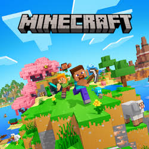

El Volleyball - Pasatiempo de Francisco Giovany García Román
El volleyball es uno de mis deportes favoritos. Me gusta porque es un deporte muy dinámico donde se necesita trabajo en equipo, velocidad y buena coordinación. Además es muy divertido jugar con amigos o en la escuela.

Jugadores famosos de Volleyball
| Jugador | País | Posición |
|---|---|---|
| Karch Kiraly | Estados Unidos | Rematador |
| Giba | Brasil | Rematador |
| Ivan Zaytsev | Italia | Opuesto |
| Wilfredo León | Polonia | Atacante |
Video sobre Volleyball
Minecraft - Pasatiempo de Miguel Angel Santiago Mendo
Minecraft es un videojuego muy popular donde puedes construir, explorar y sobrevivir en un mundo hecho de bloques. Es muy creativo porque permite crear casas, ciudades y hasta mundos completos mientras enfrentas monstruos y descubres nuevos lugares.

Personajes de Minecraft
| Personaje | Tipo | Característica |
|---|---|---|
| Steve | Jugador | Personaje principal del juego |
| Creeper | Monstruo | Explota cuando se acerca |
| Enderman | Monstruo | Puede teletransportarse |
| Aldeano | NPC | Permite hacer intercambios |